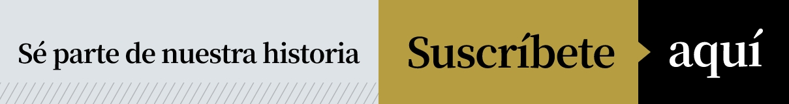

110 mil gracias
El Comercio celebra el hito de superar los 110 mil suscriptores digitales con orgullo y profundo agradecimiento a nuestra gran comunidad de lectores. Ellos nos llenan de optimismo y por ellos reafirmamos nuestro compromiso de seguir haciendo del periodismo la más noble de las profesiones.
